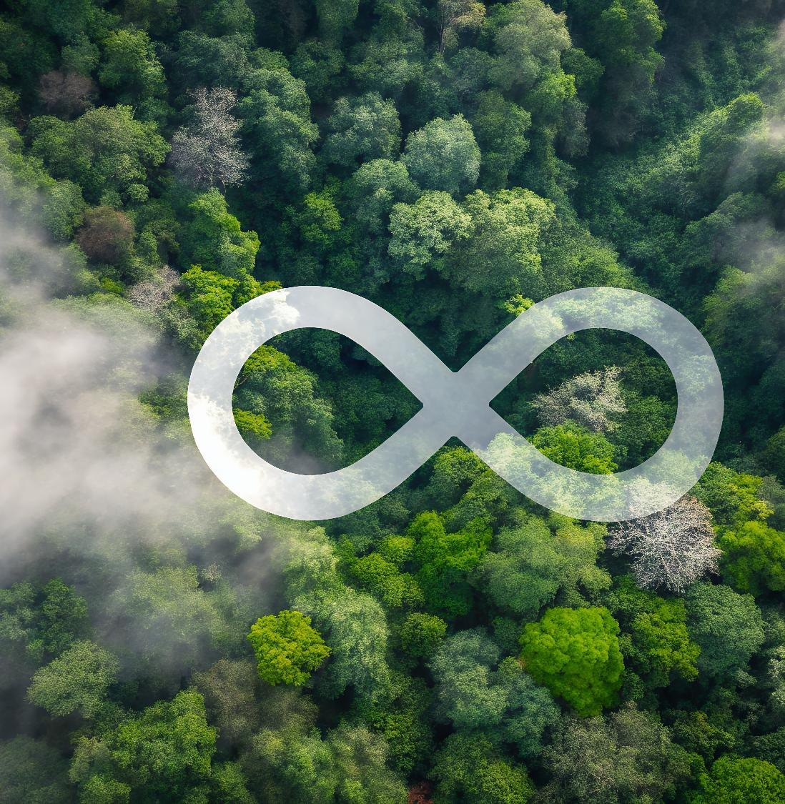
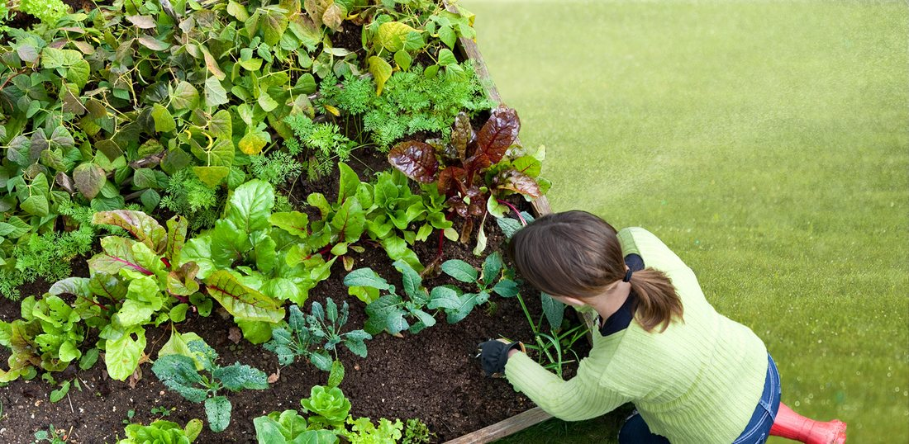
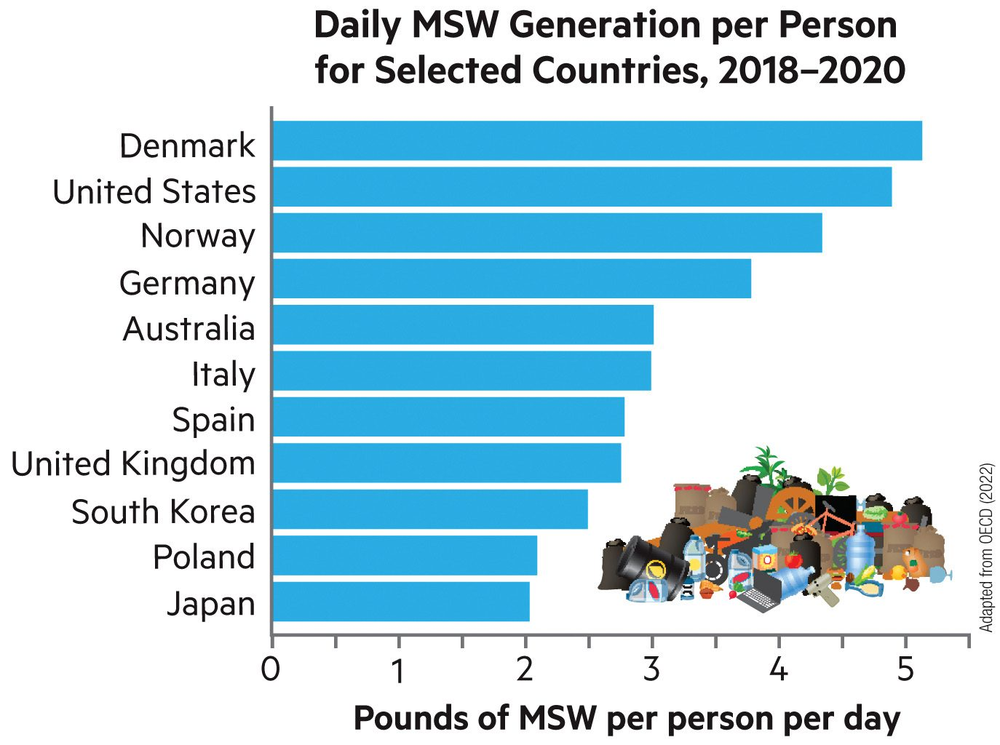
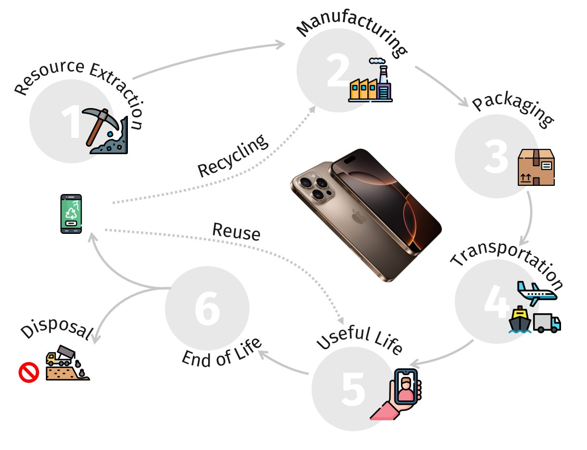

SOS110 · Class Exercise 17 · Waste and the circular economy
Class Exercise 17
Three short exercises. Learn how ASU Zero Waste works, trace an iPhone through its life cycle, then design a circular residence hall.
M06Complex Socio-economic Issues and Sustainable Innovations
How this works
MagnifierTap for more information
BarsTap for facts and numbers
Page and pencilTap to write and submit an answer

Photo: instructor-suppliedExercise17This slideCover
SOS110 · Class Exercise 17 · Check in
Enter today’s code
Your instructor shows a code on screen. Checking in counts toward participation.

Photo: instructor-suppliedExercise17This slideCheck-inCheck-in is saved by the course site, not by this page.
SOS110 · Class Exercise 17 · Quick check · Trash per person
How much do we throw out?
The EPA says Americans add 4.9 pounds of garbage per person every day. Pick a group and see the total. Where does it all go? Mostly to a landfill. Then share one way you could cut your own.
Every day4.9pounds
Every year1,789pounds
That is one person. Look at the chart: which countries make more?

Exercise17This slideTrash per personChart adapted from OECD (2022). Group sizes are teaching numbers.
More information
Municipal solid waste (MSW)
MSW is the garbage households and businesses throw away. It does not count waste made upstream, in mines and factories, before the product reaches you.
Facts and numbers
US trash in numbers
Per person, the United States is one of the largest makers of MSW. Only Denmark is higher on this chart.
Per person, per day
4.9 lb
EPA estimate
Per person, per year
1,800+
pounds, as the chapter states
Compared with 1960
~2×
nearly double today
Your answer
Where could you cut your trash?
A leverage point is a small change that makes a big difference. Pick the one that fits you best.
1Pick one leverage point.
2Write one thing you will do to cut your own trash.
SOS110 · Class Exercise 17 · Exercise 1 · Know how ASU Zero Waste works
How ASU Zero Waste works
About 5 minutes. Read how ASU sorts its waste, then take the quick check. Tap an icon.
Exercise17This slideASU Zero WasteSource: ASU Zero Waste pages at cfo.asu.edu. The drawing is ours. ASU lists change, so check the ASU Waste Directory.
ASU Zero Waste
The blue bin
ASU says: “Use the Blue Bin for all your commingled recycling.” Paper, rigid plastic and metal are the usual items. Empty liquids first and keep food out.
Cardboard: “Please flatten cardboard before placing it in the bin.”
ASU’s accepted-items list changes over time. Check the ASU Waste Directory before you toss.
ASU Zero Waste
Bins for every space
ASU uses different bins for different spaces:
- Deskside bin: 7 gallons.
- Community “Slim Jim”: 23 gallons.
- Toter: 96 gallons, for cleanouts and moves.
- Hamper: for large amounts of cardboard, in certain central spots in a building.
ASU Zero Waste
Streams with their own page
Some things do not go in the blue bin. ASU gives each its own page: E-waste, Film and soft plastics, Styrofoam and Compost.
We could not check where the drop-offs are for each residence hall.
ASU Zero Waste
Think before you throw
ASU’s recycling page says “Think before you throw” and points to the Waste Directory. You can use it to “search for and discover how to dispose of, recycle and repurpose everyday items.”
SOS110 · Class Exercise 17 · Exercise 1 · Know how ASU Zero Waste works
Quick check: where does it go?
Pick the right place for each item. Then tap the pencil to say what you will do.
0 right
Exercise17This slideQuick checkAnswers follow ASU Zero Waste pages. Special drop-off covers e-waste and film and soft plastics. Check the ASU Waste Directory for today’s rules.
Your answer
What I will do
1Which item will you most likely sort wrong?
2What is one thing you will do to be a more sustainability-minded student?
SOS110 · Class Exercise 17 · Exercise 2 · iPhone life cycle
Close the gaps
About 8 minutes. Look at the phone’s life cycle. Tap an icon for a hint, then tap the pencil to answer.

Exercise17This slideiPhone LCAPicture is from the lecture. Step descriptions are typical, not exact.
A hint
What other steps are there?
The picture shows six steps. Check that you can name them in order, then ask: which steps happen where you cannot see them? Hints from the lecture: mineral extraction, packaging, transportation, and reuse, recycling and repair.
A hint
Where are the gaps?
A gap is a place where materials, energy or value are lost or thrown away. For a phone, look at mining waste, packaging, shipping fuel and phones that end up in a drawer or a landfill.
A hint
What could change?
Examples of changes: less packaging, a phone that is easy to repair, a take-back program, fewer new phones. Pick one step and write one change.
Your answer
My iPhone life cycle
1Pick one step where a sustainable change would help most.
2Write one change you could make there.
Step 1
Resource extraction
A phone contains many minerals and metals, such as aluminum, copper, lithium and rare earths. They are dug out of the ground and processed before any phone is built. Mining uses land, water and energy and leaves waste rock behind.
Step 2
Manufacturing
Factories turn the materials into chips, screens, batteries and cases, then assemble the phone. Making the parts uses energy and makes waste, such as scrap and chemicals.
Step 3
Packaging
Each phone is sold in a box with paper and plastic inside. Packaging is thrown away almost at once, so it is a quick way to make waste.
Step 4
Transportation
The parts and the finished phones travel by plane, ship and truck, often around the world. Transport burns fuel.
Step 5
Useful life
This is the part you control. Charging uses electricity. A longer life means fewer new phones need to be made. Repairing a cracked screen or replacing a battery stretches the useful life.
Step 6
End of life
When a phone stops being useful it can go two ways. Disposal sends it to a landfill. The loop in the picture sends it back: the phone is reused by someone else or recycled so its metals become new products.
SOS110 · Class Exercise 17 · Exercise 3 · The circular residence hall
ASU’s circular resource system
About 4 minutes. A campus can be a circular system too. Tap an icon, then go to the next slide to triage.
Exercise17This slideASU circular systemSource: ASU Circular Resource System page, cfo.asu.edu/circular-resource-system. Drawing is ours.
ASU circular resource system
ASU’s commitments
ASU’s Circular Resource System page lists these commitments:
- 30% aversion by fiscal year 2025.
- 90% diversion by fiscal year 2025.
- Each year, raise the value of diverted materials in the hierarchy of reuse.
- Each year, cut single-use plastics headed for the landfill.
Aversion is making less waste to begin with. Diversion is keeping waste out of the landfill.
ASU circular resource system
Campus collection infrastructure
ASU tracks every stream: trash, commingled recycling, food waste, green waste and yard waste, and has done so since fiscal year 2007. Bins come in several sizes, and compost, e-waste, film and soft plastics and Styrofoam have their own pages.
This is how a campus keeps materials moving. We could not verify what each residence hall offers.
ASU circular resource system
Single-use plastics
Nearly 14% of ASU’s waste is single-use plastics. ASU plans to work with suppliers to cut them.
ASU circular resource system
Think before you throw: Campus Triage
“Triage” means deciding what to do first. On the next slide, pick the best move for each item: refuse it, reuse or repair it, recycle or compost it, or send it to the landfill as a last resort.
SOS110 · Class Exercise 17 · Exercise 3 · The circular residence hall
Campus Triage
Think before you throw. Pick the best first move for each item. The best moves come first: refuse, reuse, recycle, and landfill last.
0 right
Exercise17This slideCampus TriageThe order follows ASU’s “hierarchy of reuse” idea from its Circular Resource System page.
SOS110 · Class Exercise 17 · Exercise 3 · The circular residence hall
Design a circular residence hall
About 12 minutes in teams. Close the loop in three systems. Tap an icon for ideas, then tap the pencil to submit your team’s picks.
ThinkHow does each loop save materials, water or energy, and who has to change a habit?
Photo: instructor-supplied
Exercise17This slideCircular residence hallIdeas are general suggestions, not ASU rules, except where the slide names ASU.
Circular residence hall
Solid waste loop
Ideas to pick from:
- Set up the deskside recycling bin and landfill bin, and learn what goes where.
- Flatten cardboard and use the cardboard hamper in your building if there is one.
- Carry a refillable bottle, a mug and a bag. Refuse free single-use items.
- Share supplies with roommates, buy things that last, and swap or donate at move-out.
Circular residence hall
Water flow loop
Ideas to pick from:
- Take shorter showers and turn off the tap while you brush.
- Report leaks and dripping fixtures to maintenance.
- Wash only full loads of laundry, in cold water.
- Refill a bottle instead of buying bottled water.
Ideas are general suggestions, not ASU rules.
Circular residence hall
Electricity loop
Vampire load (also called standby or phantom power) is electricity that devices use while plugged in but off or idle.
- Plug chargers, TVs and consoles into a power strip and switch it off.
- Unplug chargers when the phone is full.
- Use sleep settings and turn off the lights when you leave.
- Choose LED bulbs and efficient devices when you buy.
Ideas are general suggestions. Standby power is often cited as a few percent to around ten percent of home electricity, so check a source before quoting a number.
Your answer
Our circular residence hall
1Pick one move for your solid waste loop.
2Pick one move for your water loop.
3Pick one move for your electricity loop.
4Which move would a team of residents find hardest, and why?
SOS110 · Class Exercise 17 · Exit ticket
Exit ticket
Counts for participation. Pick an answer, then tap Show answer.
An old phone still works. Which choice keeps the most value?
Exercise17This slideExit ticketCorrect answer: B. Reuse keeps the whole phone in use, which beats recycling.
SOS110 · Class Exercise 17 · Takeaway
Close the loop
Nature has no landfills. We can design our way closer.
- Nature cycles every material and lets energy flow through.
- A life cycle shows where the gaps in a product are, and a circular economy closes them.
- Start where you live: sort well, make less, and cut your water and electricity use.
Photo: instructor-supplied
Exercise17This slideTakeawayThe forest photo is on the cover.